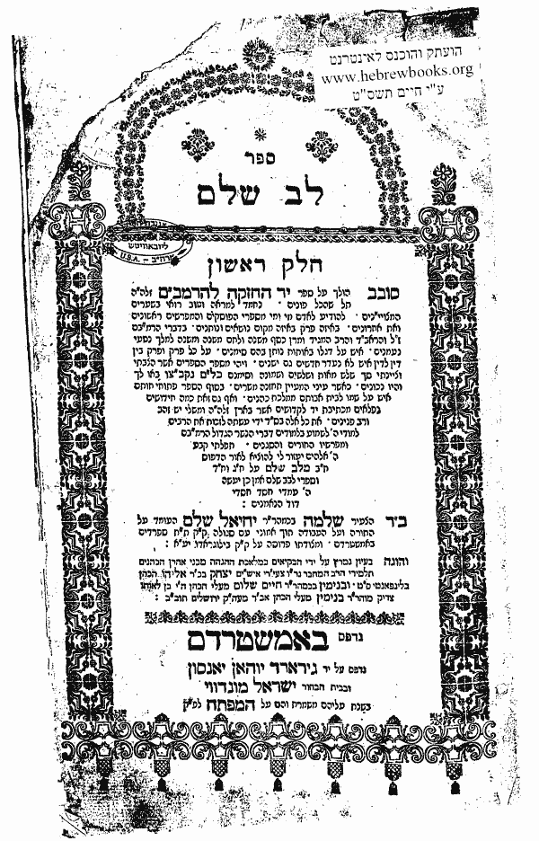

Rav Shlomo Salem
1705- 1781
Biography
Rav Shlomo was born in Edirne (Turkey). His father was Chaim Yechiel Cohen. He became chief Rabbi in Vidin and in 1740 he was appointed Rav in de kehilla of Sophia. In 1752 Rav Salem came to Belgrado to recover from an illness. At that time, the kehilla was without a Rav and the elders of the kehilla approached him with the request that he become their Rav. He took the offer, on condition that he would be able to go to different cities abroad to publish his works.
Rav Salem came to live in Amsterdam in 1761 and served as Chacham of the Sephardi kehilla. In Amsterdam he published his famous seforim Shonei Halochos (on Sefer Halochos Gedolos) and Lev Shalem (on the Mishne Torah).
The Chida writes about Rav Salem in his sefer Ma’agal Tov and tells about conversations he had with him as well as divrei torah he heard from him.
Rav Shlomo was nifter in Amsterdam in 1781 and was buried in Ouderkerk.
Major Works
Shonei Halochos (on Sefer Halochos Gedolos)
Lev Shalem (on the Mishne Torah)

Visiting the Kever
Rav Shlomo Salem was buried in the Portuguese Jewish Cemetery (Beth Haim) in Ouderkerk aan de Amstel.
Open every day from 08.30 - 19.00 (in the summer till 20.00). On Friday open till 17.00.
Address: Beth Chaim
Kerkstraat 10, Ouderkerk aan de Amstel
For more info or for tour guides see info@bethchaim.nl